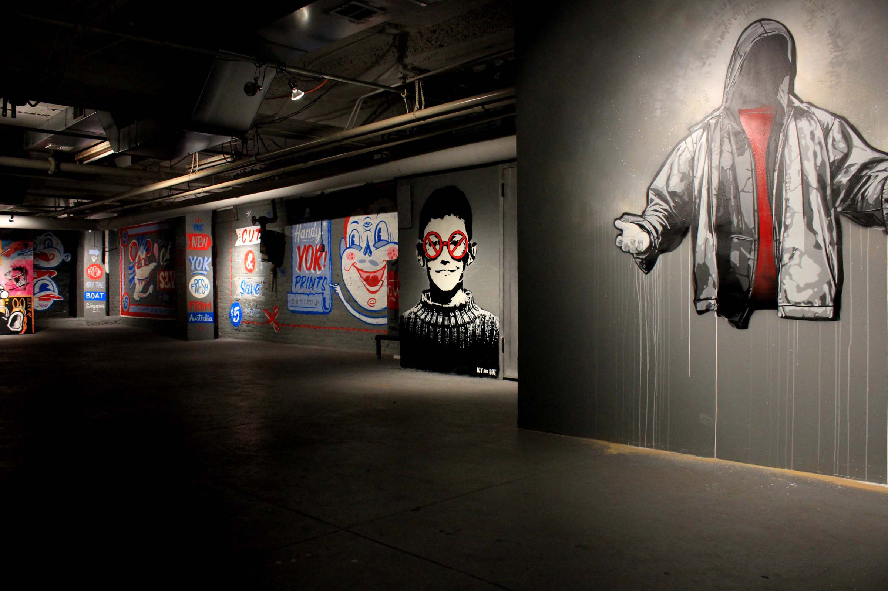
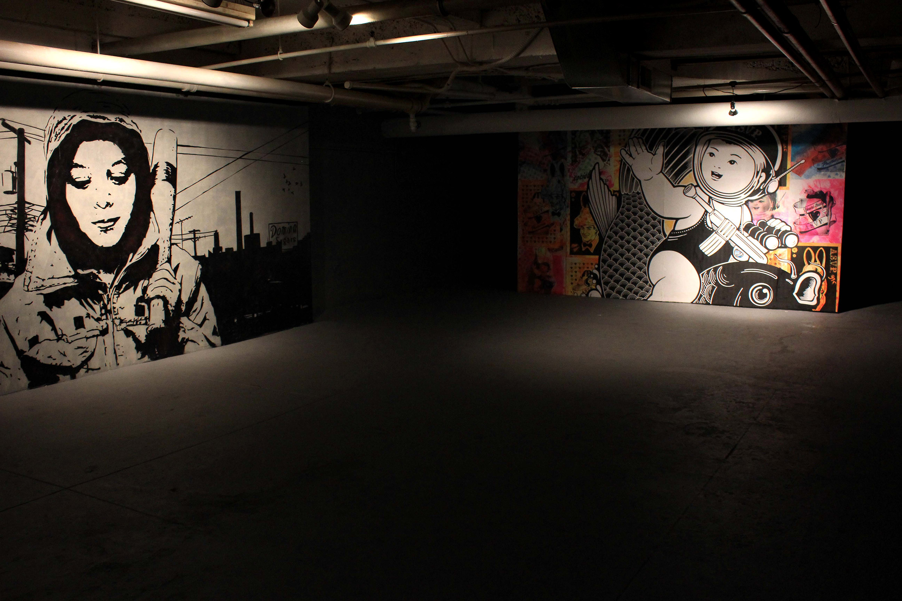
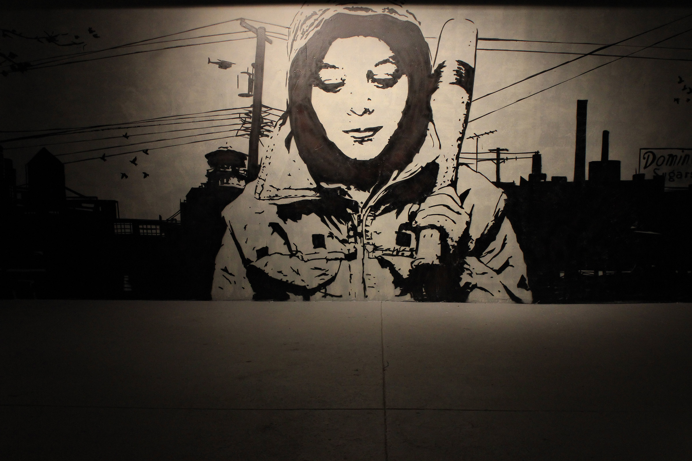
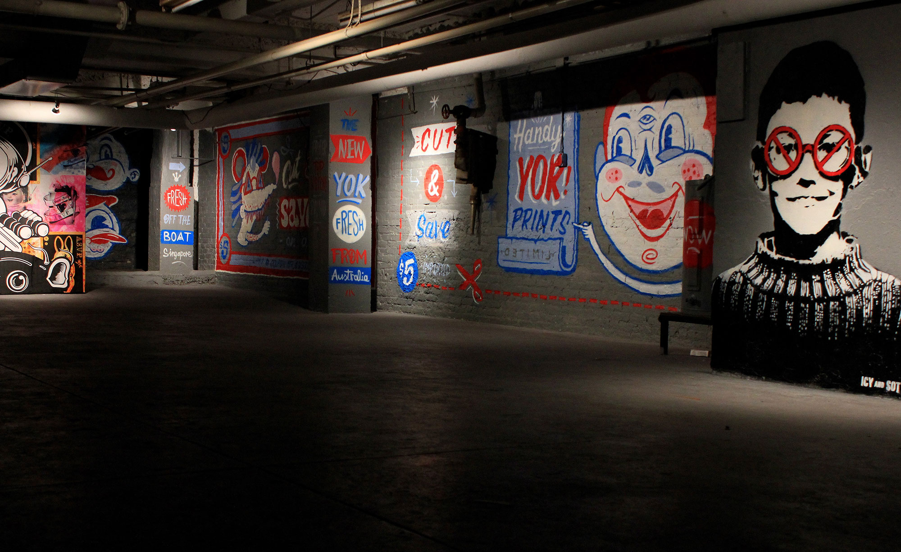
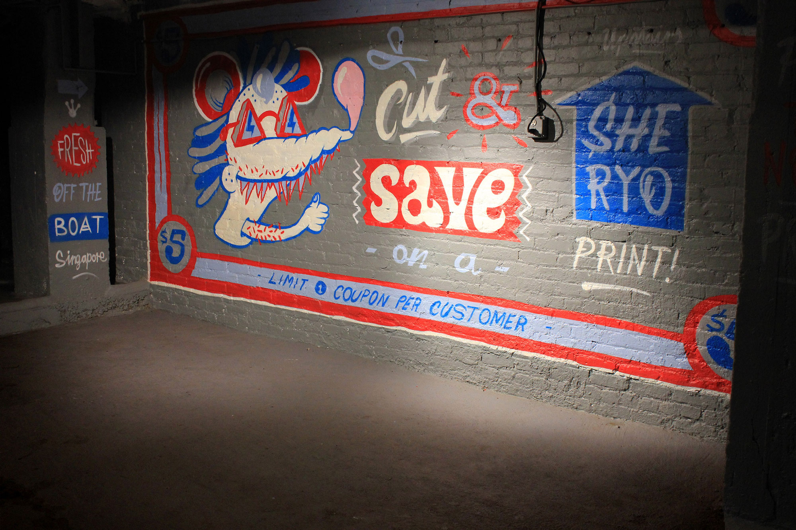
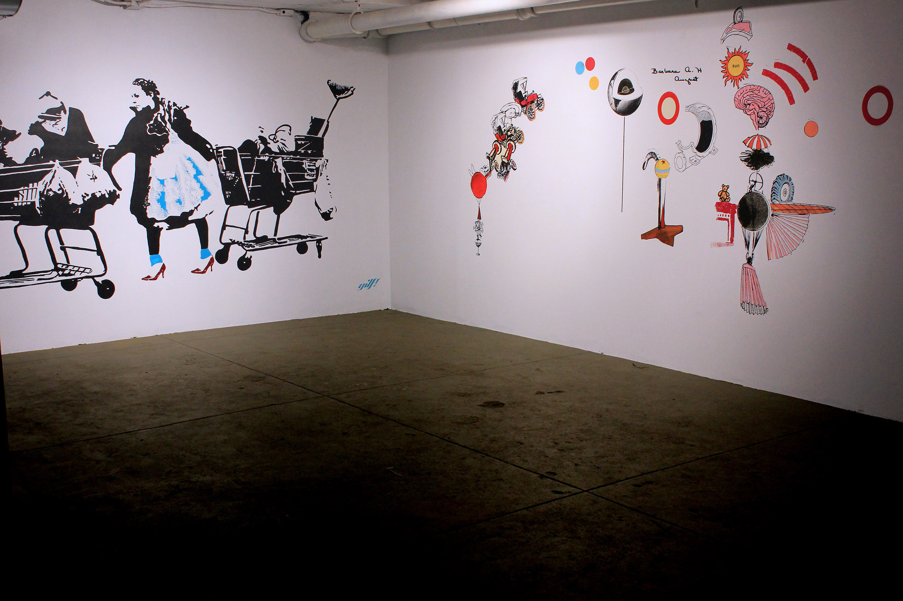

Come & Get It!






Come and Get it!
Alben, Daniel Arango, Ghost of a Dream, Jesper Haynes, Ted Noten, Rachel Bee Porter, Tom Sanford, Shelter Serra and Marie Vic
February 10 - March 16, 2012
Opening Reception: Friday, February 10, 6 - 8 pm
New York, NY - Hendershot Gallery is pleased to announce the opening of Come and Get It!, a group show featuring the work of Alben, Daniel Arango, Ghost of a Dream, Jesper Haynes, Ted Noten, Rachel Bee Porter, Tom Sanford, Shelter Serra and Marie Vic. The exhibition will be open to the public from February 10 to March 16, 2012, with an opening reception on Friday, February 10, from 6 - 8 pm.
Come and Get It! encompasses our inherent fascination with consumer goods. While the artist's reference to popular culture is certainly not a new endeavor, the boundary between art and commerce has become increasingly faint. Come and Get It! exhibits the work of eight contemporary artists, each of whom explores the intersection between popular culture, consumerism and art. Inspired by bold and overt advertisements scattered throughout Manhattan, the title of this show further exaggerates the sales tactics used to seduce us into making impulsive purchases. For the duration of this five-week exhibition, Hendershot Gallery redesigned its gallery space - creating an ironic juxtaposition between the contemporary art world and the retail experience.
Highlighting the reciprocal dialogue between art and commerce, Hendershot Gallery partnered up with local businesses and artists to contribute their products for the exhibition. Books and t-shirts from photographer Jesper Haynes' St. Marks: 1986-2006 series were on display at the gallery, revealing twenty years of memories throughout his time living on the iconic New York City block.
The opening reception for Come and Get It! was sponsored by our friends at BOMB Beer Company and The Little Cupcake Bakeshop.